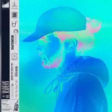
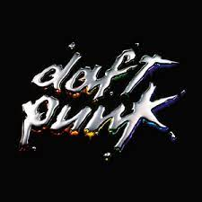

© Hugo Leclercq
Good Faith (2019)
Madeon
Good Faith is French producer, Madeon's Sophomore full length album. Madeon has spent the time between this album's release and his first project, Adventure, working with big artists like Lady Gaga, sharpening his craft which is clearly evident on Good Faith. With a loud and triumphant sound, this album screams out with evidence of his prowess and how far his talents have come since his first work. He was also touring this album last semester and made a stop in Madison which I was lucky enough to get to go to (along with Porter Robinson the following week).
Top songs:
Be Fine
Heavy With Hoping
No Fear No More

© Warner Music France
Discovery (2001)
Daft Punk
This is one of my favorite albums of all time. This album is legendary dance music group, Daft Punk's second entry to further cement their mark in history. Whereas most fans would most likely choose the much more mainstream-friendly Random Access Memories (2013), this album has a much more special place in my memory as the album that created the legends and the robotic personas that the group will be known for for a long time to come. Lastly, this album was accompanied by an incredible movie by the name of Interstella 5555.
Top songs:
Digital Love
One More Time
Face To Face
© Sample Sized LLC
Nurture (2021)
Porter Robinson
Picture this, it has been nearly 8 years since Porter Robinson had dropped the instant classic album Worlds (2014) and fans were highly doubting they would ever heard from their favorite artist again. Out of seemingly nowhere, he then drops a new song and accomponying music video and fans rejoice. Nurture is a celebration of everything this world has to offer and the journey Porter has been on since his previous release. From the beautiful instrumentals to the well tuned, high-pitched vocals, this album appears to offer fans a completely new sound that we are sure to want more of. One thing is for sure though, this album has come straight from Robinson's heart.
Top songs:
Musician
Mother
Get Your Wish